《深度学习进阶：自然语言处理处理》读书笔记
第1章 前言
这是学习《深度学习进阶：自然语言处理》一书的过程中所作摘要。作者是斋藤康毅。 《深度学习入门：基于python的理论与实现》和《深度学习进阶：自然语言处理》两书深入浅出，写的很精彩，个人认为即使是非计算机专业的人员也能够几乎没有门槛的阅读。原书第一章是对神经网络的复习，故不再赘述。感兴趣的读者可阅读《深度学习入门：基于python的理论与实现》读书笔记这篇博客。
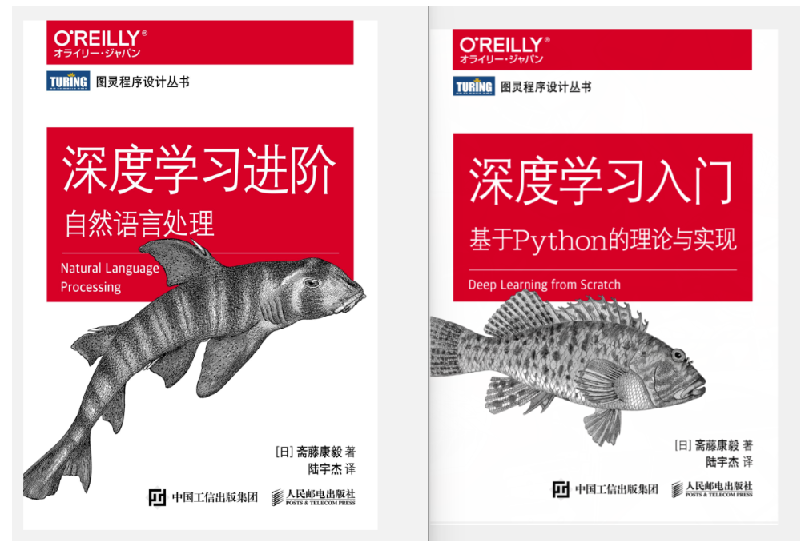
第2章 自然语言和单词的分布式表示
我们平常使用的语言称为自然语言。所谓自然语言处理（NLP），顾名思义，就是处理自然语言的科学。一种能够让计算机理解人类语言的技术。
同义词词典：具有相同含义的单词（同义词）或含义类似的单词（近义词）被归类到同一个组中。
问题：
难以顺应时代变化：新词不断出现，而那些落满尘埃的旧词不知哪天就会被遗忘。语言的含义也会随着时间的推移而变化。
人力成本高
无法表示单词的微妙差异
语料库就是大量的文本数据。
预处理是指，将文本分割为单词（分词），并将分割后的单词列表转化为单词 ID 列表。
单词的分布式表示将单词表示为固定长度的向量。
“某个单词的含义由它周围的单词形成”，称为分布式假设。
上下文的大小（即周围的单词有多少个）称为窗口大小。窗口大小为 2，上下文包含左右各2个单词，以此类推。
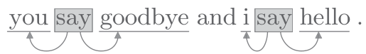的共现矩阵：
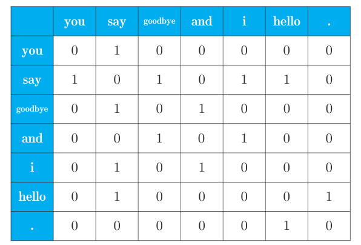
共现矩阵：用表格汇总各个单词的上下文中包含的单词的频数
测量单词的向量表示的相似度方面，余弦相似度（数量积除以模的乘积）是很常用的。相似单词的排序的实现：
❶ 取出查询词的单词向量。
❷ 分别求得查询词的单词向量和其他所有单词向量的余弦相似度。
❸ 基于余弦相似度的结果，按降序显示它们的值。
对于随机变量 x 和 y，它们的点互信息PMI ：$PMI(x,y)=\log_2\frac{P(x,y)}{P(x)P(y)}$
降维:减少向量维度。尽量保留“重要信息”的基础上减少。
降维方法：SVD奇异值分解。SVD 将任意矩阵分解为 3 个矩阵的乘积：$X=USV^T$,其中 U 和 V 是列向量彼此正交的正交矩阵，S 是除了对角线元素以外其余元素均为 0 的对角矩阵。
总结：
• 使用 WordNet 等同义词词典，可以获取近义词或测量单词间的相似度等
• 使用同义词词典的方法存在创建词库需要大量人力、新词难更新等问题
• 目前，使用语料库对单词进行向量化是主流方法
• 近年来的单词向量化方法大多基于“单词含义由其周围的单词构成”这一分布式假设
• 在基于计数的方法中，对语料库中的每个单词周围的单词的出现频数进行计数并汇总（= 共现矩阵）
• 通过将共现矩阵转化为 PPMI 矩阵并降维，可以将大的稀疏向量转变为小的密集向量
• 在单词的向量空间中，含义上接近的单词距离上理应也更近
第3章 word2vec
注：word2vec 一词最初用来指程序或者工具，但是随着该词的流行，在某些语境下，也指神经网络的模型。正确地说，CBOW 模型和 skip-gram 模型是 word2vec 中使用的两个神经网络。
基于计数的方法的问题：现实世界中，语料库处理的单词数量非常大，比如如果词汇量超过 100 万个，那么使用基于计数的方法就需要生成一个 100 万 × 100万的庞大矩阵，对如此庞大的矩阵执行 SVD 显然是不现实的。
基于推理的方法使用神经网络，通常在 mini-batch 数据上进行学习。这意味着神经网络一次只需要看一部分学习数据（mini-batch），并反复更新权重。
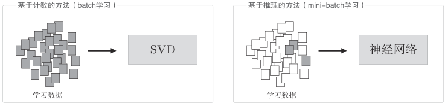
基于计数的方法一次性处理全部学习数据；反之，基于推理的方法使用部分学习数据逐步学习。这意味着，在词汇量很大的语料库中，即使 SVD 等的计算量太大导致计算机难以处理，神经网络也可以在部分数据上学习。并且，神经网络的学习可以使用多台机器、多个 GPU 并行执行，从而加速整个学习过程。在这方面，基于推理的方法更有优势。此外基于推理的方法支持参数的增量学习（添加新词）。
当给出周围的单词（上下文）时，预测目标词处会出现什么单词，这就是推理。
CBOW连续词袋模型：
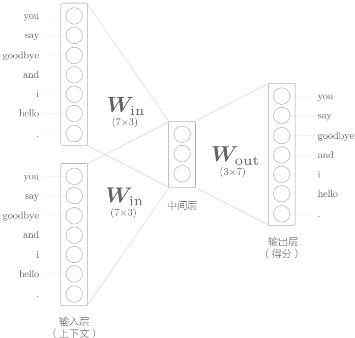
如果对上下文考虑 N 个单词，则输入层会有 N 个。
从输入层到中间层的变换由相同的全连接层（权重为$ W{in} $）完成，从中间层到输出层神经元的变换由另一个全连接层（权重为 $ W{out} $）完成。中间层的神经元是各个输入层经全连接层变换后得到的值的“平均”。输出层的各个神经元对应于各个单词。输出层的神经元是各个单词的得分，它的值越大，说明对应单词的出现概率就越高。
全连接层的权重 $ W{in} $就是我们要的单词的分布式表示。输出侧的权重 $ W{out} $也同样保存了对单词含义进行了编码的向量，在列方向上保存了各个单词的分布式表示。最受欢迎的是方案是只使用输入侧的权重。
CBOW 模型从上下文的多个单词预测中间的单词（目标词），而 skip-gram 模型则从中间的单词（目标词）预测周围的多个单词（上下文）。
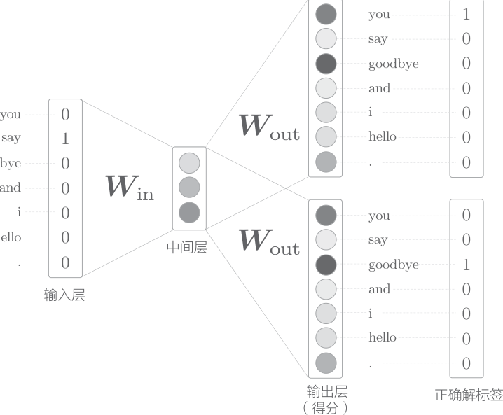
skip-gram 模型的输入层只有一个，输出层的数量则与上下文的单词个数相等。
从单词的分布式表示的准确度来看，在大多数情况下，skip-grm 模型的结果更好。特别是随着语料库规模的增大，在低频词和类推问题的性能方面，skip-gram 模型往往会有更好的表现。
就学习速度而言，CBOW 模型比 skip-gram 模型要快。
考虑需要向词汇表添加新词并更新单词的分布式表示的场景。此时，基于计数的方法需要从头开始计算。基于推理的方法（word2vec）允许参数的增量学习。可以将之前学习到的权重作为下一次学习的初始值，在不损失之前学习到的经验的情况下，高效地更新单词的分布式表示。在这方面，基于推理的方法（word2vec）具有优势。
就分布式表示的性质而言，基于计数的方法主要是编码单词的相似性，而 word2vec（特别是 skip-gram 模型）除了单词的相似性以外，还能理解更复杂的单词之间的模式。
总结：
• 基于推理的方法以预测为目标，同时获得了作为副产物的单词的分布式表示
• word2vec 是基于推理的方法，由简单的 2 层神经网络构成
• word2vec 有 skip-gram 模型和 CBOW 模型
• CBOW 模型从多个单词（上下文）预测 1 个单词（目标词）
• skip-gram 模型反过来从 1 个单词（目标词）预测多个单词（上下文）
• 由于 word2vec 可以进行权重的增量学习，所以能够高效地更新或添加单词的分布式表示
第4章 word2vec的高速化
CBOW的问题是，随着语料库中处理的词汇量的增加，计算量也随之增加。
对上一章中简单的 word2vec 进行两点改进：引入名为Embedding 层的新层（解决输入层的 one-hot 表示和权重矩阵 $W_{in}$的乘积计算瓶颈），以及引入名为 Negative Sampling 的新损失函数（解决中间层和权重矩阵 Wout 的乘积以及 Softmax 层的计算瓶颈）。
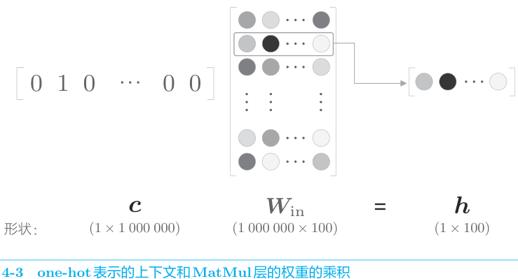
将矩阵乘积称为 MatMul 节点。MatMul 是 Matrix Multiply 的缩写。
Embedding 层：创建一个从权重参数中抽取“单词 ID 对应行（向量）”的层。在这个 Embedding 层存放词嵌入（分布式表示）。
将 word2vec（CBOW 模型）的实现中的输入侧的 MatMul 层换成 Embedding 层。既能减少内存使用量，又能避免不必要的计算。
负采样：用二分类拟合多分类
负采样方法既可以求将正例作为目标词时的损失，同时也可以采样（选出）若干个负例，对这些负例求损失。然后，将这些数据（正例和采样出来的负例）的损失加起来，将其结果作为最终的损失。
如何抽取负例：基于语料库的统计数据进行采样，让语料库中经常出现的单词容易被抽到。先计算语料库中各个单词的出现次数，并将其表示为“概率分布”，然后使用这个概率分布对单词进行采样
考虑到计算的复杂度，有必要将负例限定在较小范围内（5 个或者 10 个）。
word2vec 中提出的负采样对刚才的概率分布增加了一个步骤，对原来的概率分布取 0.75 (不固定，小于1即可)次方。这是为了防止低频单词被忽略。通过取 0.75 次方，低频单词的概率将稍微变高。
迁移学习是指在某个领域学到的知识可以被应用于其他领域。
总结：
• Embedding 层保存单词的分布式表示，在正向传播时，提取单词 ID对应的向量
• 因为 word2vec 的计算量会随着词汇量的增加而成比例地增加，所以最好使用近似计算来加速
• 负采样技术采样若干负例，使用这一方法可以将多分类问题转化为二分类问题进行处理
• 基于 word2vec 获得的单词的分布式表示内嵌了单词含义，在相似的上下文中使用的单词在单词向量空间上处于相近的位置
• word2vec 的单词的分布式表示的一个特性是可以基于向量的加减法运算来求解类推问题
• word2vec 的迁移学习能力非常重要，它的单词的分布式表示可以应用于各种各样的自然语言处理任务
第5章 RNN
前馈（feedforward）是指网络的传播方向是单向的。
RNN（Recurrent Neural Network，循环神经网络）的特征在于拥有一个环路（或回路）。这个环路可以使数据不断循环。通过数据的循环，RNN 一边记住过去的数据，一边更新到最新的数据。
语言模型（language model）给出了单词序列发生的概率。具体来说，就是使用概率来评估一个单词序列发生的可能性，即在多大程度上是自然的单词序列。
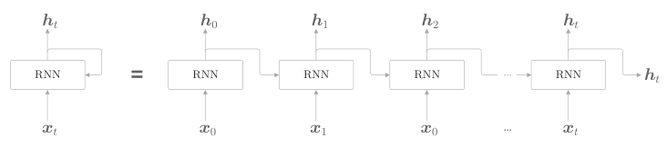
各个时刻的 RNN 层接收传给该层的输入和前一个RNN 层的输出，然后据此计算当前时刻的输出。
困惑度表示“概率的倒数”（这个解释在数据量为 1 时严格一致）。困惑度越小，分叉度越小，表明模型越好。
Backpropagation Through Time（基于时间的反向传播），简称 BPTT。将时间轴方向上过长的网络在合适的位置进行截断，从而创建多个小型网络，然后对截出来的小型网络执行误差反向传播法，这个方法称为 Truncated BPTT（截断的 BPTT）。
总结：
• RNN 具有环路，因此可以在内部记忆隐藏状态
• 通过展开 RNN 的循环，可以将其解释为多个 RNN 层连接起来的神经网络，可以通过常规的误差反向传播法进行学习（= BPTT）
• 在学习长时序数据时，要生成长度适中的数据块，进行以块为单位的 BPTT 学习（= Truncated BPTT）
• 语言模型将单词序列解释为概率
• 理论上，使用 RNN 层的条件语言模型可以记忆所有已出现单词的信息
第6章 Gated RNN
RNN 之所以不擅长学习时序数据的长期依赖关系，是因为 BPTT 会发生梯度消失和梯度爆炸的问题。
RNN 层通过向过去传递“有意义的梯度”，能够学习时间方向上的依赖关系。此时梯度（理论上）包含了那些应该学到的有意义的信息，通过将这些信息向过去传递，RNN 层学习长期的依赖关系。但是，如果这个梯度在中途变弱（甚至没有包含任何信息），则权重参数将不会被更新。也就是说，RNN 层无法学习长期的依赖关系。
梯度的大小随时间步长呈指数级增加，这就是梯度爆炸；梯度呈指数级减小，这就是梯度消失。
为什么会出现这样的指数级变化呢？因为矩阵 $W_h$ 被反复乘了 T 次。
如果矩阵的奇异值的最大值大于 1，则可以预测梯度很有可能会呈指数级增加（必要条件）；而如果奇异值的最大值小于 1，则可以判断梯度会呈指数级减小。
解决梯度爆炸的方法：梯度裁剪：如果梯度的 L2 范数 ∥g∥ (各维度平方的和开根号)大于或等于阈值，就修正梯度：$g=\frac{threshold}{||g||}g$
为了解决梯度消失，需要从根本上改变 RNN 层的结构： Gated RNN，其中具有代表性的有LSTM（长短期记忆网络，Long Short-Term Memory） ：
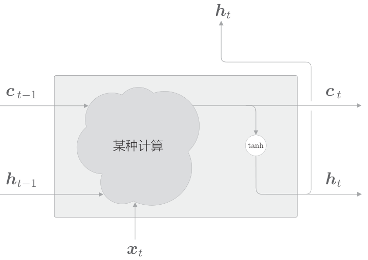
注:tanh 函数（双曲正切函数）tanh的输出是−1.0 ~ 1.0的实数。我们可以认为这个−1.0 ~ 1.0的数值表示某种被编码的“信息”的强弱（程度）。
针对 tanh($c_t$) 的各个元素，调整它们作为下一时刻的隐藏状态的重要程度。由于这个门管理下一个隐藏状态 $h_t$ 的输出，所以称为输出门：
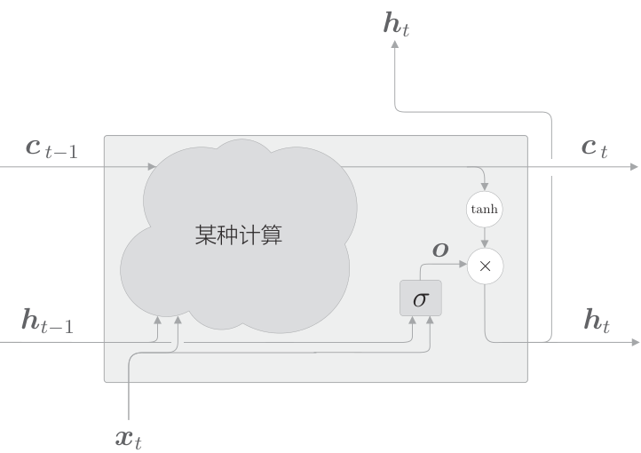
输出门的开合程度（流出比例）根据输入$xt$ 和上一个状态$h{t-1}$ 求出。
遗忘门:明确告诉记忆单元需要“忘记什么”,在记忆单元 $c_{t-1}$上添加一个忘记不必要记忆的门:
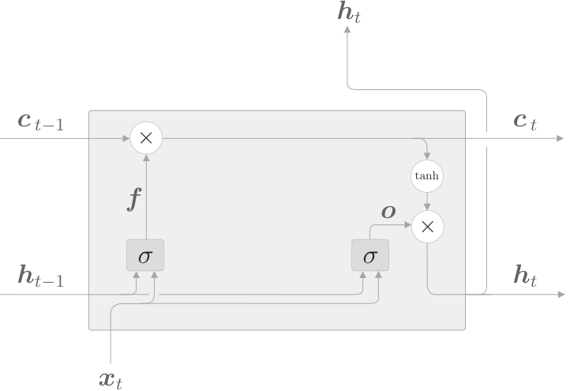
（门进行的计算表示为 σ,乘积为对应元素的乘积）
记忆单元只会忘记信息。现在我们还想向这个记忆单元添加一些应当记住的新信息，为此我们添加新的 tanh 节点,这个 tanh 节点的作用不是门，而是将新的信息添加到记忆单元中。：
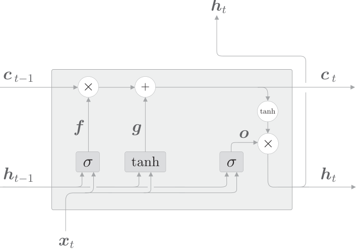
最后，我们给上图中的 g 添加门，这里将这个新添加的门称为输入门：
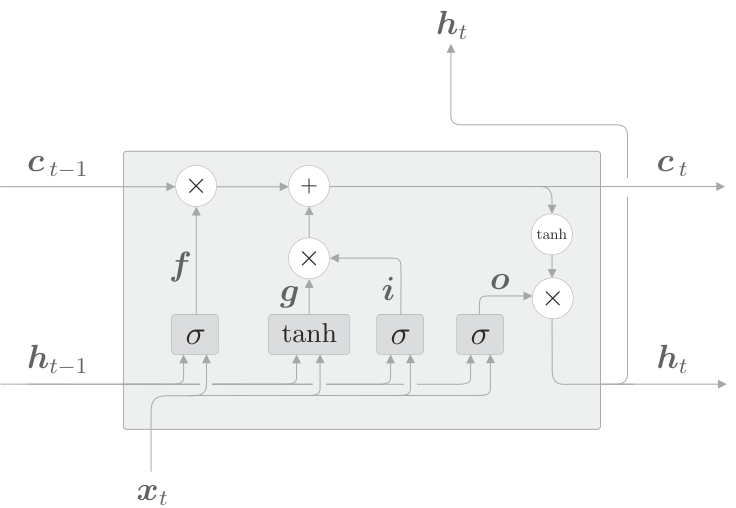
输入门判断新增信息 g 的各个元素的价值有多大。输入门会添加加权后的新信息。
RNN 比常规的前馈神经网络更容易发生过拟合，抑制过拟合：常规的Dropout，在训练时随机忽略层的一部分神经元。权重共享。
无论沿时间方向（水平方向）前进多少，信息都不会丢失。Dropout 与时间轴独立，仅在深度方向（垂直方向）上起作用。
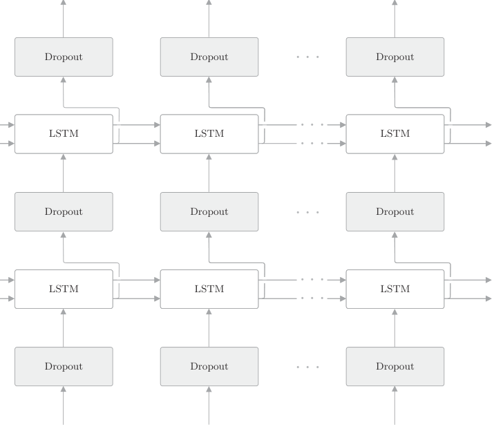
（变分dropout可以应用在时间方向上）
权重共享：
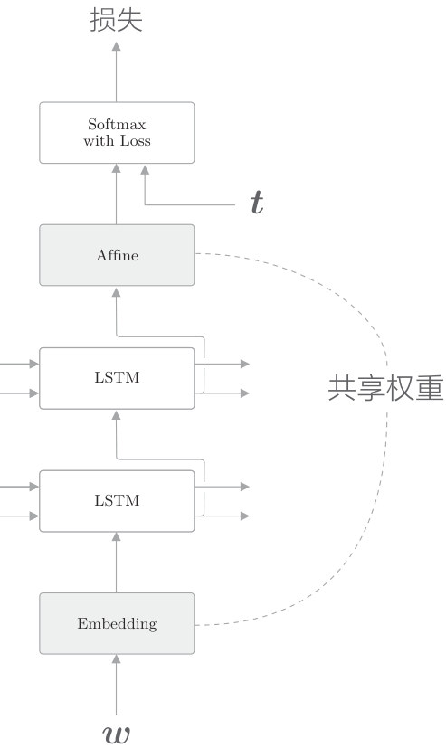
绑定（共享）Embedding 层和 Affine 层的权重的技巧在于权重共享。通过在这两个层之间共享权重，可以大大减少学习的参数数量。尽管如此，它仍能提高精度。
共享权重可以减少需要学习的参数数量，从而促进学习。另外，参数数量减少，还能抑制过拟合。
总结：
• 在简单 RNN 的学习中，存在梯度消失和梯度爆炸问题
• 梯度裁剪对解决梯度爆炸有效，LSTM、GRU 等 Gated RNN 对解决梯度消失有效
• LSTM 中有 3 个门：输入门、遗忘门和输出门
• 门有专门的权重，并使用 sigmoid 函数输出 0.0 ～ 1.0 的实数
• LSTM 的多层化、Dropout 和权重共享等技巧可以有效改进语言模型
• RNN 的正则化很重要，人们提出了各种基于 Dropout 的方法
第7章 基于RNN生成文本
seq2seq 模型也称为 Encoder-Decoder 模型。有两个模块——Encoder（编码器）和 Decoder（解码器）。
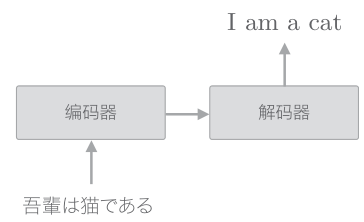
编码器首先对“吾輩は猫である”这句话进行编码，然后将编码好的信息传递给解码器，由解码器生成目标文本。此时，编码器编码的信息浓缩了翻译所必需的信息，解码器基于这个浓缩的信息生成目标文本。
seq2seq的改进：
反转输入数据（Reverse）。直观上可以认为，反转数据后梯度的传播可以更平滑。
偷窥（Peeky）：将编码好的信息分配给解码器的其他层，这可以解释为其他层也能“偷窥”到编码信息。重要的信息不是一个人专有，而是多人共享，这样我们或许可以做出更加正确的判断。
总结：
• 通过组合两个 RNN，可以将一个时序数据转换为另一个时序数据（seq2seq）
• 在 seq2seq 中，编码器对输入语句进行编码，解码器接收并解码这个编码信息，获得目标输出语句
• 反转输入语句（Reverse）和将编码信息分配给解码器的多个层（Peeky）可以有效提高 seq2seq 的精度
第8章 Attention
seq2seq 中使用编码器对时序数据进行编码，然后将编码信息传递给解码器。此时，编码器的输出是固定长度的向量。实际上，这个“固定长度”存在很大问题。因为固定长度的向量意味着，无论输入语句的长度如何（无论多长），都会被转换为长度相同的向量。
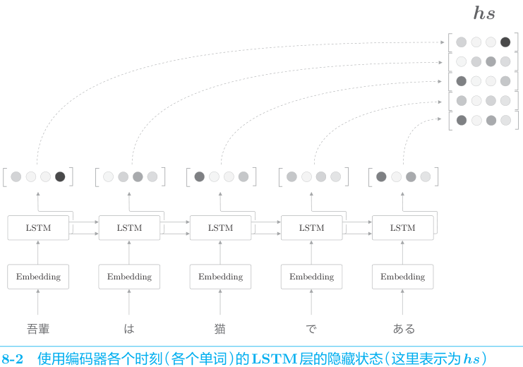
编码器的改进：将编码器的全部时刻的隐藏状态取出来，编码器可以根据输入语句的长度，成比例地编码信息。使用各个时刻（各个单词）的隐藏状态向量，可以获得和输入的单词数相同数量的向量。编码器就摆脱了“一个固定长度的向量”的制约。
仅关注必要的信息，并根据该信息进行时序转换。这个机制称为 Attention。
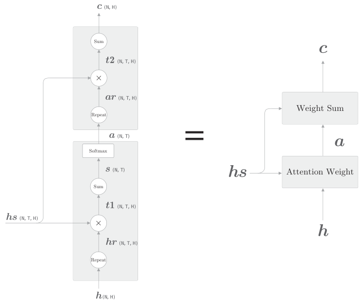
Attention Weight 层关注编码器输出的各个单词向量 hs，并计算各个单词的权重 a；然后，Weight Sum 层计算 a 和 hs 的加权和，并输出上下文向量 c。我们将进行这一系列计算的层称为 Attention 层。
将这个 Attention 层放在 LSTM 层和 Affine 层的中间：
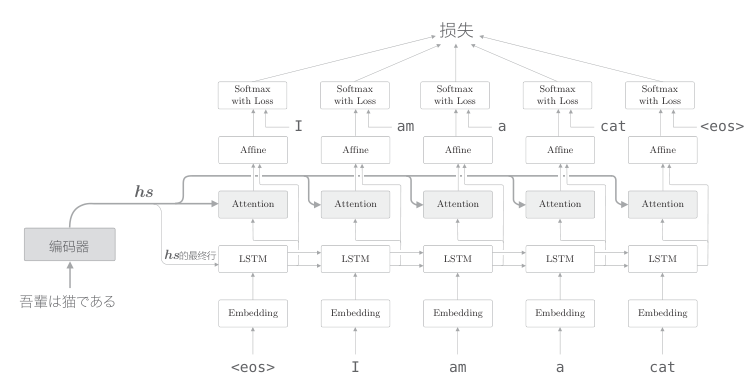
总结：
• 在翻译、语音识别等将一个时序数据转换为另一个时序数据的任务中，时序数据之间常常存在对应关系
• Attention 从数据中学习两个时序数据之间的对应关系
• Attention 使用向量内积（方法之一）计算向量之间的相似度，并输出这个相似度的加权和向量
• 因为 Attention 中使用的运算是可微分的，所以可以基于误差反向传播法进行学习